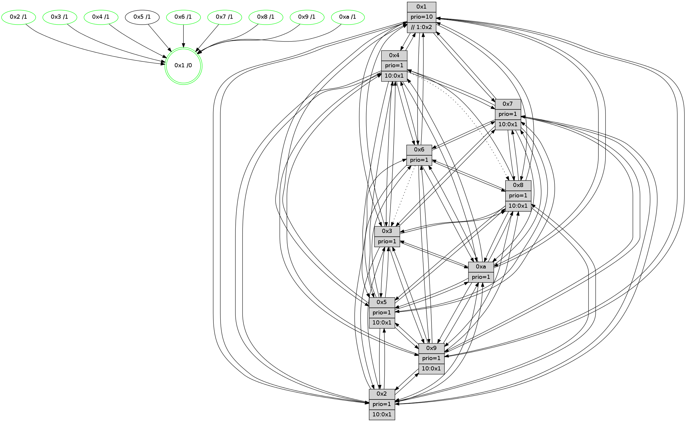

>> << IDX [start] -100 -25 -5 +0 +5 +25 +100 [1200.00390506]
 Previous packets
----------------------------------------------------------------------
1195.235140 beacon01(faad) #0 coord=01,02,03,04,05,06,07,0a,09,08 cycle=688.0ms assoc
-- color-indic=1 64 22 61
1195.245123 beacon02(faad) #0 coord=01,02,03,04,05,06,07,0a,09,08 cycle=688.0ms assoc 64 b1 50
1195.255123 beacon03(faad) #0 coord=01,02,03,04,05,06,07,0a,09,08 cycle=688.0ms assoc 64 cb 1d
1195.265123 beacon04(faad) #0 coord=01,02,03,04,05,06,07,0a,09,08 cycle=688.0ms assoc 64 bc f7
1195.275121 beacon05(faad) #0 coord=01,02,03,04,05,06,07,0a,09,08 cycle=688.0ms assoc 64 c6 ba
1195.285123 beacon06(faad) #0 coord=01,02,03,04,05,06,07,0a,09,08 cycle=688.0ms assoc 64 48 6d
1195.295123 beacon07(faad) #0 coord=01,02,03,04,05,06,07,0a,09,08 cycle=688.0ms assoc 64 32 20
1195.305128 beacon0a(faad) #0 coord=01,02,03,04,05,06,07,0a,09,08 cycle=688.0ms assoc 64 43 2b
1195.315127 beacon09(faad) #0 coord=01,02,03,04,05,06,07,0a,09,08 cycle=688.0ms assoc 64 cd fc
1195.325129 beacon08(faad) #0 coord=01,02,03,04,05,06,07,0a,09,08 cycle=688.0ms assoc 64 b7 b1
1195.336358 [Hello(1): seq=672 sym=4,2,9,5,10,3,8,6,7 sysInfo=coloring-mode-on,ColoringModeRequestCalled stat=4:1,2,1,0/2:3,6,7,2/9:3,5,0,0/5:12,8,0,7/10:1,1,12,6/3:9,11,1,7/8:9,9,2,3/6:3,11,8,14/7:10,12,3,14]
1195.339316 [Hello(5): seq=763 sym=7,6,4,3,1,9,8,10,2 sysInfo=hasWarning stat=7:15,13,11,13/6:15,6,10,2/4:15,5,4,13/3:3,15,3,14/1:5,5,2,0/9:3,0,2,9/8:13,14,0,2/10:8,12,1,8/2:14,3,5,6]
1195.345362 [Color(6) seq=395 @0:0 prio=1]
1195.347601 [Hello(3): seq=763 sym=1,7,2,4,8,9,10,5 sysInfo=hasWarning stat=1:6,4,0,0/7:11,6,0,12/2:8,15,4,0/4:1,3,4,11/8:6,2,14,4/9:0,6,6,14/10:13,9,13,4/5:4,0,11,15]
1195.350947 [STC(1) #0.188 tree-change,inconsistent-stability,stable,to-color d=0]
1195.352232 [Color(3) seq=392 @0:0 prio=1]
1195.356642 [Color(2) seq=339 @0:0 prio=1 >10.@1,1.@3,1.@4,1.@5]
1195.359071 [Color(10) seq=352 @0:0 prio=1]
----------------------------------------------------------------------
1196.023270 beacon01(faad) #0 coord=01,02,03,04,05,06,07,0a,09,08 cycle=688.0ms assoc
-- color-indic=1 64 9e 64
1196.033252 beacon02(faad) #0 coord=01,02,03,04,05,06,07,0a,09,08 cycle=688.0ms assoc 64 0d 55
1196.043253 beacon03(faad) #0 coord=01,02,03,04,05,06,07,0a,09,08 cycle=688.0ms assoc 64 77 18
1196.053252 beacon04(faad) #0 coord=01,02,03,04,05,06,07,0a,09,08 cycle=688.0ms assoc 64 00 f2
1196.063253 beacon05(faad) #0 coord=01,02,03,04,05,06,07,0a,09,08 cycle=688.0ms assoc 64 7a bf
1196.073253 beacon06(faad) #0 coord=01,02,03,04,05,06,07,0a,09,08 cycle=688.0ms assoc 64 f4 68
1196.083253 beacon07(faad) #0 coord=01,02,03,04,05,06,07,0a,09,08 cycle=688.0ms assoc 64 8e 25
1196.093260 beacon0a(faad) #0 coord=01,02,03,04,05,06,07,0a,09,08 cycle=688.0ms assoc 64 ff 2e
1196.103259 beacon09(faad) #0 coord=01,02,03,04,05,06,07,0a,09,08 cycle=688.0ms assoc 64 71 f9
1196.113258 beacon08(faad) #0 coord=01,02,03,04,05,06,07,0a,09,08 cycle=688.0ms assoc 64 0b b4
1196.124878 [STC(6)->1 #0.188 tree-change,inconsistent-stability,stable,to-color d=1]
1196.127825 [STC(5)->1 #0.188 tree-change,inconsistent-stability,to-color d=1]
1196.129423 [Hello(4): seq=763 sym=5,7,6,2,3,9,10,1 asym=8 sysInfo= stat=5:1,7,2,15/7:3,6,6,1/6:2,5,4,12/2:7,8,13,14/3:1,1,5,12/9:9,6,9,11/10:3,12,12,13/1:2,9,5,1/8:1,2,0,0]
1196.132287 [Hello(7): seq=763 sym=2,3,5,6,4,8,10,1 sysInfo=hasWarning stat=2:9,15,13,1/3:15,8,13,0/5:2,11,9,1/6:14,12,10,9/4:11,10,8,1/8:6,10,2,0/10:8,13,13,5/1:11,1,3,0]
1196.134566 [STC(4)->1 #0.188 tree-change,inconsistent-stability,stable,to-color d=1]
1196.137606 [Hello(8): seq=707 sym=5,2,3,7,9,6,10,1 sysInfo=hasWarning stat=5:10,2,7,0/2:3,5,4,10/3:13,11,8,0/7:0,1,0,0/9:7,13,9,3/6:11,8,6,13/10:5,15,12,4/1:9,2,3,0]
1196.140312 [STC(8)->1 #0.188 tree-change,inconsistent-stability,stable,to-color d=1]
1196.141725 [Hello(9): seq=707 sym=2,5,3,4,7,6,8,10,1 sysInfo=hasWarning stat=2:11,10,0,8/5:4,12,1,5/3:12,3,6,0/4:1,3,1,0/7:7,12,5,1/6:8,0,13,11/8:4,15,2,3/10:1,13,5,4/1:7,11,6,1]
1196.144169 [Color(4) seq=320 @0:0 prio=1 >10.@1,1.@2,1.@3,1.@5]
1196.146019 [Hello(10): seq=696 sym=6,2,3,8,7,5,9,4,1 sysInfo=hasWarning stat=6:4,7,0,1/2:5,2,3,10/3:10,4,9,11/8:7,7,14,2/7:9,10,6,6/5:7,13,15,14/9:4,14,7,3/4:15,9,7,0/1:8,10,12,1]
1196.148585 [STC(7)->1 #0.188 tree-change,inconsistent-stability,stable,to-color d=1]
1196.151811 [Color(7) seq=309 @0:0 prio=1 >10.@1,1.@2,1.@3,1.@4]
1196.154613 [STC(9)->1 #0.188 tree-change,inconsistent-stability,stable,to-color d=1]
1196.158186 [Color(9) seq=336 @0:0 prio=1 >10.@1,1.@2,1.@3,1.@4]
1196.162519 [Color(8) seq=362 @0:0 prio=1 >10.@1,1.@2,1.@3,1.@4]
----------------------------------------------------------------------
1196.811400 beacon01(faad) #0 coord=01,02,03,04,05,06,07,0a,09,08 cycle=688.0ms assoc
-- color-indic=1 64 0a bd
1196.821384 beacon02(faad) #0 coord=01,02,03,04,05,06,07,0a,09,08 cycle=688.0ms assoc 64 99 8c
1196.831382 beacon03(faad) #0 coord=01,02,03,04,05,06,07,0a,09,08 cycle=688.0ms assoc 64 e3 c1
1196.841382 beacon04(faad) #0 coord=01,02,03,04,05,06,07,0a,09,08 cycle=688.0ms assoc 64 94 2b
1196.851384 beacon05(faad) #0 coord=01,02,03,04,05,06,07,0a,09,08 cycle=688.0ms assoc 64 ee 66
1196.861384 beacon06(faad) #0 coord=01,02,03,04,05,06,07,0a,09,08 cycle=688.0ms assoc 64 60 b1
1196.871386 beacon07(faad) #0 coord=01,02,03,04,05,06,07,0a,09,08 cycle=688.0ms assoc 64 1a fc
1196.881387 beacon0a(faad) #0 coord=01,02,03,04,05,06,07,0a,09,08 cycle=688.0ms assoc 64 6b f7
1196.891389 beacon09(faad) #0 coord=01,02,03,04,05,06,07,0a,09,08 cycle=688.0ms assoc 64 e5 20
1196.901388 beacon08(faad) #0 coord=01,02,03,04,05,06,07,0a,09,08 cycle=688.0ms assoc 64 9f 6d
1196.912863 [Hello(5): seq=764 sym=7,6,4,3,1,9,8,10,2 sysInfo=hasWarning stat=7:0,14,12,13/6:15,7,10,2/4:0,5,4,13/3:4,0,3,14/1:5,5,3,0/9:4,1,3,9/8:14,15,1,2/10:9,13,1,8/2:15,4,5,6]
1196.916618 PARSE ERROR************************
Traceback (most recent call last):
File "PacketAnalysis.py", line 167, in showOperaPacket
structPacket = OperaPacketParse.parsePacket(rawPacket)
File "../../pkg-python/HipSens/Core/OperaPacketParse.py", line 461, in parsePacket
return parseHelloMessage(data)
File "../../pkg-python/HipSens/Core/OperaPacketParse.py", line 109, in parseHelloMessage
sysInfo,stability,colorInfo = struct.unpack("!HBB", linkList[0:4])
error: unpack requires a string argument of length 4
48 34 02 00 02 f8 00 02 02 12 04 00 05 00 07 00 06 00 03 00 09 00 08 00 0a 00 01 00 53 04 00 02 00 00 4c 12 ba 83 0e b6 eb 4c bd 8d 9d 45 73 96 ba 54 a2 d6 0e 7c 53 f6
1196.919833 [Hello(6): seq=764 sym=5,4,7,9,8,10,1 asym=3 sysInfo=hasWarning stat=5:4,2,3,1/4:4,12,15,5/7:10,6,10,12/9:4,14,8,8/8:11,11,4,5/10:4,10,5,12/1:12,4,3,1/3:1,0,0,12]
1196.922784 [Color(2) seq=340 @0:0 prio=1 >10.@1,1.@3,1.@4,1.@5]
1196.924523 [Color(10) seq=353 @0:0 prio=1]
1196.927192 [Hello(3): seq=764 sym=1,7,2,4,8,9,10,5 sysInfo=hasWarning stat=1:7,5,0,0/7:12,7,1,12/2:8,0,4,0/4:1,3,4,11/8:7,3,15,4/9:1,7,7,14/10:14,10,13,4/5:5,0,12,15]
1196.929695 [Hello(1): seq=673 sym=4,2,9,5,10,3,8,6,7 sysInfo=coloring-mode-on,ColoringModeRequestCalled stat=4:1,2,1,0/2:3,7,7,2/9:4,6,1,0/5:12,8,0,7/10:2,2,12,6/3:9,12,1,7/8:10,10,3,3/6:3,11,9,14/7:11,13,4,14]
1196.935460 [Color(3) seq=393 @0:0 prio=1]
----------------------------------------------------------------------
1197.599532 beacon01(faad) #0 coord=01,02,03,04,05,06,07,0a,09,08 cycle=688.0ms assoc
-- color-indic=1 64 b6 b8
1197.609515 beacon02(faad) #0 coord=01,02,03,04,05,06,07,0a,09,08 cycle=688.0ms assoc 64 25 89
1197.619514 beacon03(faad) #0 coord=01,02,03,04,05,06,07,0a,09,08 cycle=688.0ms assoc 64 5f c4
1197.629515 beacon04(faad) #0 coord=01,02,03,04,05,06,07,0a,09,08 cycle=688.0ms assoc 64 28 2e
1197.639515 beacon05(faad) #0 coord=01,02,03,04,05,06,07,0a,09,08 cycle=688.0ms assoc 64 52 63
1197.649515 beacon06(faad) #0 coord=01,02,03,04,05,06,07,0a,09,08 cycle=688.0ms assoc 64 dc b4
1197.659516 beacon07(faad) #0 coord=01,02,03,04,05,06,07,0a,09,08 cycle=688.0ms assoc 64 a6 f9
1197.669518 beacon0a(faad) #0 coord=01,02,03,04,05,06,07,0a,09,08 cycle=688.0ms assoc 64 d7 f2
1197.679521 beacon09(faad) #0 coord=01,02,03,04,05,06,07,0a,09,08 cycle=688.0ms assoc 64 59 25
1197.689520 beacon08(faad) #0 coord=01,02,03,04,05,06,07,0a,09,08 cycle=688.0ms assoc 64 23 68
1197.701368 [Hello(10): seq=697 sym=6,2,3,8,7,5,9,4,1 sysInfo=hasWarning stat=6:4,7,0,1/2:5,2,3,10/3:11,5,9,11/8:7,8,14,2/7:9,11,7,6/5:8,13,15,14/9:4,15,8,3/4:15,9,7,0/1:9,10,12,1]
1197.704353 [Hello(7): seq=764 sym=2,3,5,6,4,8,10,1 sysInfo=hasWarning stat=2:10,0,13,1/3:0,9,13,0/5:3,11,10,1/6:15,13,11,9/4:11,10,9,1/8:6,11,2,0/10:8,13,13,5/1:12,1,3,0]
1197.706787 [Hello(8): seq=708 sym=5,2,3,7,9,6,10,1 sysInfo=hasWarning stat=5:11,2,7,0/2:4,6,4,10/3:14,12,8,0/7:0,1,0,0/9:7,13,9,3/6:12,8,7,13/10:5,0,12,4/1:10,2,3,0]
1197.711033 [Color(7) seq=310 @0:0 prio=1 >10.@1,1.@2,1.@3,1.@4]
1197.713766 [Color(1) seq=445 @0:0 prio=10 >>1.@2,1.@3,1.@4]
1197.716837 [Hello(9): seq=708 sym=2,5,3,4,7,6,8,10,1 sysInfo=hasWarning stat=2:12,11,0,8/5:5,12,1,5/3:13,4,6,0/4:1,4,1,0/7:7,12,5,1/6:9,1,14,11/8:4,0,2,3/10:1,13,5,4/1:8,11,6,1]
1197.719352 [Color(8) seq=363 @0:0 prio=1 >10.@1,1.@2,1.@3,1.@4]
1197.721083 [Color(9) seq=337 @0:0 prio=1 >10.@1,1.@2,1.@3,1.@4]
1197.727464 [Hello(4): seq=764 sym=5,7,6,2,3,9,10,1 asym=8 sysInfo= stat=5:2,7,2,15/7:3,7,7,1/6:3,5,5,12/2:8,9,13,14/3:2,2,5,12/9:9,7,10,11/10:4,12,12,13/1:3,9,5,1/8:1,3,0,0]
1197.731642 [Color(4) seq=321 @0:0 prio=1 >10.@1,1.@2,1.@3,1.@5]
----------------------------------------------------------------------
1198.387664 beacon01(faad) #0 coord=01,02,03,04,05,06,07,0a,09,08 cycle=688.0ms assoc
-- color-indic=1 64 72 b6
1198.397646 beacon02(faad) #0 coord=01,02,03,04,05,06,07,0a,09,08 cycle=688.0ms assoc 64 e1 87
1198.407647 beacon03(faad) #0 coord=01,02,03,04,05,06,07,0a,09,08 cycle=688.0ms assoc 64 9b ca
1198.417646 beacon04(faad) #0 coord=01,02,03,04,05,06,07,0a,09,08 cycle=688.0ms assoc 64 ec 20
1198.427646 beacon05(faad) #0 coord=01,02,03,04,05,06,07,0a,09,08 cycle=688.0ms assoc 64 96 6d
1198.437648 beacon06(faad) #0 coord=01,02,03,04,05,06,07,0a,09,08 cycle=688.0ms assoc 64 18 ba
1198.447648 beacon07(faad) #0 coord=01,02,03,04,05,06,07,0a,09,08 cycle=688.0ms assoc 64 62 f7
1198.457652 beacon0a(faad) #0 coord=01,02,03,04,05,06,07,0a,09,08 cycle=688.0ms assoc 64 13 fc
1198.467634 beacon09(faad) #0 coord=01,02,03,04,05,06,07,0a,09,08 cycle=688.0ms assoc 64 9d 2b
1198.477652 beacon08(faad) #0 coord=01,02,03,04,05,06,07,0a,09,08 cycle=688.0ms assoc 64 e7 66
1198.489141 [Hello(5): seq=765 sym=7,6,4,3,1,9,8,10,2 sysInfo=hasWarning stat=7:1,15,12,13/6:0,7,10,2/4:1,6,4,13/3:5,1,3,14/1:6,6,3,0/9:5,2,3,9/8:15,0,1,2/10:10,13,1,8/2:0,5,5,6]
1198.493530 [Hello(1): seq=674 sym=4,2,9,5,10,3,8,6,7 sysInfo=coloring-mode-on,ColoringModeRequestCalled stat=4:2,3,1,0/2:3,7,7,2/9:5,7,1,0/5:12,8,0,7/10:3,2,12,6/3:9,13,1,7/8:10,11,3,3/6:3,11,9,14/7:11,13,4,14]
1198.495971 [Color(10) seq=354 @0:0 prio=1]
1198.497993 [Hello(6): seq=765 sym=5,4,7,9,8,10,1 asym=3 sysInfo=hasWarning stat=5:5,2,3,1/4:5,13,15,5/7:11,7,10,12/9:5,15,8,8/8:12,12,4,5/10:5,10,5,12/1:13,5,3,1/3:2,1,0,12]
1198.500769 [Color(6) seq=397 @0:0 prio=1]
1198.503396 [Hello(2): seq=761 sym=4,5,7,6,3,9,8,10,1 sysInfo=hasWarning stat=4:4,9,10,11/5:7,11,14,0/7:13,5,11,14/6:13,9,13,11/3:6,5,13,9/9:7,10,3,7/8:5,6,10,11/10:7,13,2,10/1:13,8,14,0]
1198.508132 [Color(2) seq=341 @0:0 prio=1 >10.@1,1.@3,1.@4,1.@5]
1198.510445 PARSE ERROR************************
Traceback (most recent call last):
File "PacketAnalysis.py", line 167, in showOperaPacket
structPacket = OperaPacketParse.parsePacket(rawPacket)
File "../../pkg-python/HipSens/Core/OperaPacketParse.py", line 461, in parsePacket
return parseHelloMessage(data)
File "../../pkg-python/HipSens/Core/OperaPacketParse.py", line 127, in parseHelloMessage
assert struct.calcsize("H")*len(neighAddrList) == len(linkList)
AssertionError
48 30 03 00 02 fd 00 02 02 10 01 00 07 00 02 00 04 00 08 00 09 00 0a 00 05 00 53 04 00 02 00 00 4c 10 00 67 c1 8d 04 08 b4 42 4f 48 e7 82 4d af fc 06 4c ac
1198.514417 [Color(3) seq=394 @0:0 prio=1]
----------------------------------------------------------------------
1199.175794 beacon01(faad) #0 coord=01,02,03,04,05,06,07,0a,09,08 cycle=688.0ms assoc
-- color-indic=1 64 ce b3
1199.185777 beacon02(faad) #0 coord=01,02,03,04,05,06,07,0a,09,08 cycle=688.0ms assoc 64 5d 82
1199.195776 beacon03(faad) #0 coord=01,02,03,04,05,06,07,0a,09,08 cycle=688.0ms assoc 64 27 cf
1199.205776 beacon04(faad) #0 coord=01,02,03,04,05,06,07,0a,09,08 cycle=688.0ms assoc 64 50 25
1199.215777 beacon05(faad) #0 coord=01,02,03,04,05,06,07,0a,09,08 cycle=688.0ms assoc 64 2a 68
1199.225777 beacon06(faad) #0 coord=01,02,03,04,05,06,07,0a,09,08 cycle=688.0ms assoc 64 a4 bf
1199.235777 beacon07(faad) #0 coord=01,02,03,04,05,06,07,0a,09,08 cycle=688.0ms assoc 64 de f2
1199.245782 beacon0a(faad) #0 coord=01,02,03,04,05,06,07,0a,09,08 cycle=688.0ms assoc 64 af f9
1199.255782 beacon09(faad) #0 coord=01,02,03,04,05,06,07,0a,09,08 cycle=688.0ms assoc 64 21 2e
1199.265782 beacon08(faad) #0 coord=01,02,03,04,05,06,07,0a,09,08 cycle=688.0ms assoc 64 5b 63
1199.278593 [Hello(10): seq=698 sym=6,2,3,8,7,5,9,4,1 sysInfo=hasWarning stat=6:5,8,0,1/2:6,3,3,10/3:12,6,9,11/8:8,9,14,2/7:10,12,7,6/5:9,13,15,14/9:5,0,8,3/4:0,10,7,0/1:9,11,12,1]
1199.281945 [Hello(8): seq=709 sym=5,2,3,7,9,6,4,10,1 sysInfo=hasWarning stat=5:12,2,7,0/2:5,7,4,10/3:15,13,8,0/7:0,1,0,0/9:7,14,9,3/6:13,9,7,13/4:0,1,0,0/10:6,0,12,4/1:11,2,3,0]
1199.285090 [Color(8) seq=364 @0:0 prio=1 >10.@1,1.@2,1.@3,1.@4]
1199.288489 [Hello(9): seq=709 sym=2,5,3,4,7,6,8,10,1 sysInfo=hasWarning stat=2:13,12,0,8/5:6,12,1,5/3:14,5,6,0/4:2,5,1,0/7:7,12,5,1/6:10,2,14,11/8:4,0,2,3/10:2,13,5,4/1:9,11,6,1]
1199.292263 [Color(9) seq=338 @0:0 prio=1 >10.@1,1.@2,1.@3,1.@4]
1199.294830 [STC(1) #0.189 tree-change,inconsistent-stability,stable,to-color d=0]
1199.296304 [Hello(7): seq=765 sym=2,3,5,6,4,8,9,10,1 sysInfo=hasWarning stat=2:11,1,13,1/3:1,10,13,0/5:4,11,10,1/6:0,14,11,9/4:12,11,9,1/8:6,12,2,0/9:0,1,0,0/10:9,13,13,5/1:13,2,3,0]
1199.299146 [Color(7) seq=311 @0:0 prio=1 >10.@1,1.@2,1.@3,1.@4]
1199.302678 [Color(1) seq=446 @0:0 prio=10 >>1.@2,1.@3,1.@4]
1199.305842 [Hello(4): seq=765 sym=5,7,6,2,3,9,10,1 asym=8 sysInfo= stat=5:3,7,2,15/7:3,7,7,1/6:4,6,5,12/2:9,10,13,14/3:3,3,5,12/9:9,7,10,11/10:5,12,12,13/1:4,9,5,1/8:1,3,0,0]
1199.310653 [Color(4) seq=322 @0:0 prio=1 >10.@1,1.@2,1.@3,1.@5]
----------------------------------------------------------------------
1199.963923 beacon01(faad) #0 coord=01,02,03,04,05,06,07,0a,09,08 cycle=688.0ms assoc
-- color-indic=1 64 fa ab
1199.973907 beacon02(faad) #0 coord=01,02,03,04,05,06,07,0a,09,08 cycle=688.0ms assoc 64 69 9a
1199.983907 beacon03(faad) #0 coord=01,02,03,04,05,06,07,0a,09,08 cycle=688.0ms assoc 64 13 d7
1199.993906 beacon04(faad) #0 coord=01,02,03,04,05,06,07,0a,09,08 cycle=688.0ms assoc 64 64 3d